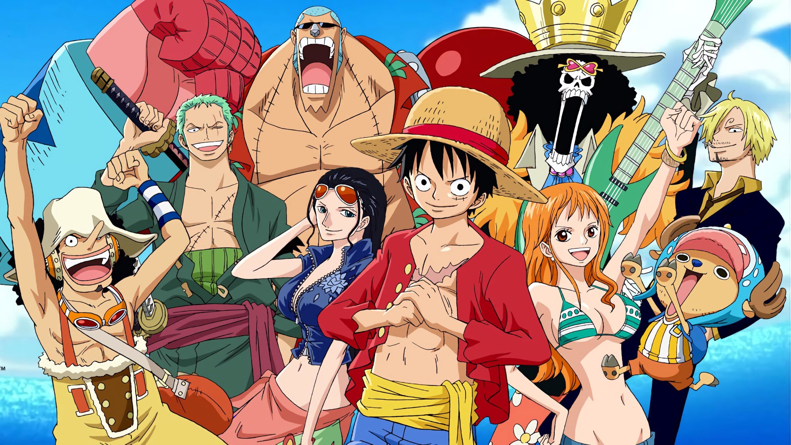

CADASTRE-SE
ENVIAR
SHANKS
Shanks é um dos personagens icônicos de One Piece. Ele é o antigo
capitão dos Piratas do Ruivo, conhecido por sua personalidade
carismática e, principalmente, por ter inspirado Luffy a se tornar um
pirata. Shanks é famoso por seu olho perdido, sacrificado para
salvar Luffy, e sua busca pelo One Piece.
Zoro
Luffy
Sanji
WALLPAPERS
VOCÊ SABE TUDO SOBRE ONE PIECE?
VAMOS FAZER O TESTE:
COMEÇAR QUIZ